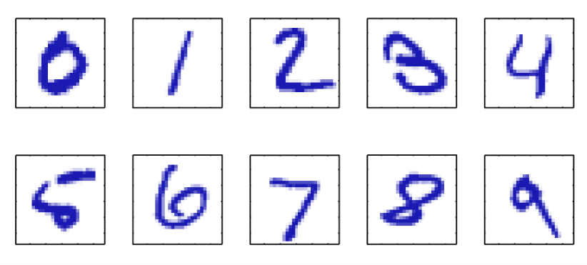

初识模式识别
模式识别问题由来已久，在不断提高模式识别成功率的过程中人们发明了一些列高效的数学工具。最近人工智能甚嚣尘上，这个问题再次进入大众的视野（尽管一直有研究者孜孜不倦的投入，最近人工智能获得了来自普罗大众超预期的关注）。那么什么是模式识别？其与当今最流行的深度学习又有什么关系？ 本文给出一个感性的介绍。在以后的博文中我会详细与之相关的一系列数学工具，包括但不限于回归，分类，神经网络，概率图模型，支持向量机，深度学习，置信网络。
模式识别的一个典型应用是手写数字的识别，比如图1中手写数字的识别。

图 1: 手写数字
每一个数字都对应一个\(28\times 28\)像素的图片，即我们可以用一个\(784\)的矢量\(\mathbf{x}\)来表示每一张图片。问题是：给定任意一个\(\mathbf{x}\)，如何识别其对应的是\(0,1,\ldots ,9\)中的哪一个呢？模式识别研究为此提供了许多强有力的算法。一个很有效的办法是：给定\(N\)个手写数字图片(这\(N\)个手写数字图片可能是对\(N\)个人写的\(0,\ldots ,9\)的随机采样)对应的矢量\(\{\mathbf{x}_{1},\ldots ,\mathbf{x}_{N}\}\)，我们称之为训练样本，我们用这些训练样本训练一个自适应模型。对这个自适应的模型我们期望训练的结果是：对于下一个数字图片的矢量输入\(\mathbf{x}\)，这个模型能够以较高的正确概率输出图片中的数字。
对于手写数字识别的问题，我们知道任何输入对应的输出都只能是十个数字中的一种。 我们可以用\(0,1,\ldots ,9\)为训练集合中的\(N\)个矢量打上标记（这需要大量的重复工作，纯体力活）。对于任何一个输入这个自适应模型的输出是一个矢量\(\mathbf{t}\)，\(\mathbf{t}\)的长度是10, 第\(i,i\in \{0,\ldots ,9\}\)个元素代表这个输入是\(i\)的概率。比如假如输入的是手写字母\(3\)，对于这个自适应模型，会给出这个输入是\(0\)的概率，是\(1\)的概率……是\(9\)的概率，这十个概率值组成矢量\(\mathbf{t}\)。当然，我们可以预计对于手写字母\(3\)(假设输入的真的是3)，这个自适应模型可能会以最高的概率判断为\(3\)，以次高的概率判断为\(8\)，判断为\(4\)的概率可能就会低一些。
说实话，对于一个信号与通信系统背景的工程师来讲，当我看到这个问题的描述时，震惊了。原来我之前学习的信道译码问题其实就是模式识别问题的特例。典型信道译码问题处理的是二进制问题，这里处理的是更高进制的问题。当然随着对机器学习的了解愈加深入，我发现机器学习信号与通信系统中的置信传输算法，自适应滤波理论都有着千丝万缕的关系。这是后话，现在，让我们再次回到手写数字识别的问题。
训练所谓的"自适应模型"其实就是使用机器学习算法已知的\(N\)个训练输入进行学习的过程，我们可以把这个模型用函数\(\mathbf{y} = f(\mathbf{x})\)表示，对于新的输入\(\mathbf{x}\)，输出\(\mathbf{y}\)，\(\mathbf{y}\)是一个长度为10的矢量，其形式与\(\mathbf{t}\)一样。而\(f(\mathbf{x})\)的精确形式在训练这个自适应模型的时候就确定了，即\(\mathbf{x},\ldots ,\mathbf{x}_{N}\)决定了\(f(\mathbf{x})\)的形式，这个决定过程也叫作学习过程。一旦模型学习完毕，我们对其输入更多的手写数字\(\mathbf{x}\)，期待这个模型能够做出准确的判决。能够识别出训练集以外的手写输入的能力叫做算法的泛化能力(generalization). 泛化能力是机器学习算法的一个重要的衡量指标。因为在实际应用中，我们总是期待机器学习算法只通过简单的学习就能够对新的输入表现出优异的性能（又想马儿跑，又想马儿不吃草，哈哈哈哈）。
在实际应用中，我们总是对大量的数据进行一些预处理，然后才将其输入给机器学习算法。这样做可以大大降低机器学习的处理难度。对数据预处理的过程也叫作数据清洗或者特征提取，经过清洗的数据等效于进行了一次降噪或者降维或者空间转换，比如我们可以用肉眼刨去明显出错的数据（降噪），我们可以把大小尺寸不一的图片变成大小尺寸一致的图片（降维），我们可以把时间域内的信号变换到频率域（空间转换）。经过预处理，可以大大降低计算复杂度，提高计算速度，降低延迟。
在手写数字识别问题中，我们对输入\(\{\mathbf{x}_{1},\ldots , \mathbf{x}_{N}\}\)用\(0,\ldots ,9\)打了标签，然后作为输入来训练自适应模型。这种学习过程叫做监督学习（supervised learning）. 对于手写识别问题，我们希望把输入的\(\mathbf{x}\)归类为十个数字中的某一个，这种类型的问题是分类问题(classification)。可以想见，对于信道译码问题也是一个分类问题。我们希望把某一个信息比特以较高概率正确的归类为\(0\)或者\(1\)。与归类问题不同，有些问题的输出是一个或者多个连续的变量，这些问题是回归问题(regression)，一个典型的回归问题是天气预报：根据当前的气温，气压预测八个小时后的气温气压。
对于另外一些问题，输入\(\{\mathbf{x}_{1},\ldots , \mathbf{x}_{N}\}\)没有任何标签，针对这些数据的机器学习算法叫做无监督学习算法(unsupervised learning)。当然对于无监督学习算法的输出，我们也有不同的期待：如果我们期待无监督学习算法发现数据中隐含的特性并对数据进行分组，这样的过程叫做分组(clustering)；如果我们期待无监督学习算法确定数据的概率分布，我们称之为密度估计（density estimation）；如果我们期待无监督算法把数据投影到三维以内，我们称之为数据可视化(visualization)。
最后，鉴于目前阿尔法狗已经在围棋上完虐人类。我们不得不提一下强化学习（reinforcement learning）。强化学习算法是指综合当前的情况，根据目标函数，做出最大化目标函数的算法。强化学习算法没有预先的输入，它通过试错来改善做出的决定的质量。这样的学习算法具有记忆，能够从失败中学习经验，并且不会失忆。在做出决定的时候，常常做出看似违反常理但是精妙的决定。据说，阿尔法狗让人类开始重新审视围棋教学。人们开始反思之前是否懂得围棋。当然，这里我只对强化学习做简单的介绍，更深入的挖掘会在以后的博文中展现。当然，要成为专家，还需要对最新文献的阅读和刻苦的训练。
尽管我们上面提到了机器学习问题的诸多分类，并且在以后的学习中会发现不同的问题有各自特有的解决办法，但是我们还会发现这些解决办法的背后有许多相通的道理。而且，更重要的是这些相通的道理都有其相同的数学理论。基本上，机器学习的理论涉及概率论，线性代数和信息论。作为一个研究信道编解码理论的通信工程师，能够同时涉及这三个理论真的是十分幸运。